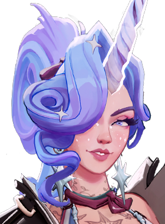

Light Eater
Blast enemies in a cone in front of you with a flare of light. Blasted enemies take spirit damage when attacked by Celeste and provide her spirit lifesteal.

Fan Database

SupportLet's contribute to the chaos!
Carny Life's projectile flies in an arc and bounces on the first surface it hits. If an enemy is within a narrow angle (~45°) of the bounce, the projectile homes toward them. Celeste cannot buy Split Shot.
Blast enemies in a cone in front of you with a flare of light. Blasted enemies take spirit damage when attacked by Celeste and provide her spirit lifesteal.
Envelop yourself in a prismatic barrier that grants bonus movement speed. If the barrier breaks, it explodes, silencing nearby enemies and reflecting a portion of the damage.
Call down a beam of light from the sky. After a short delay, the beam explodes, dealing spirit damage to all targets in the area. Celeste gains a stacking buff that increases her spirit damage whenever this hits an enemy hero.
Launch a deadly orb of light that deals spirit damage, applies a slow, and reduces enemy dash distance on impact. The orb then bounces to nearby enemies, prioritizing heroes. Can be held indefinitely and fires when the ability key is released.
Celeste has altered aerial movement, allowing her to glide gracefully above the battlefield:
Even in a world of magic, some things are still rare and unusual. So what is a unicorn to do? Announce her presence to the world and potentially have poachers looking to saw off her horn? Or hide in plain sight at a Coney Island Side Show where most folk would assume her appearance was just part of an act?
Over the years "The Dazzling Celeste" has grown into one of the more popular attractions on Coney, and while the applause from a cheering audience is appreciated, what keeps her waking up in the morning is the found family she's made at work: Keruba the Mermaid, Blockhead Lenny, Chickenwing, and Ted.
So when she discovered that one of her own sold part of their soul in order to cover a gambling debt, Celeste knew it was time to step out of the shadows and do whatever it takes to get it back. Is revealing her power to The Patrons a risk? Yes. But that's tomorrow's problem—her family needs help today.